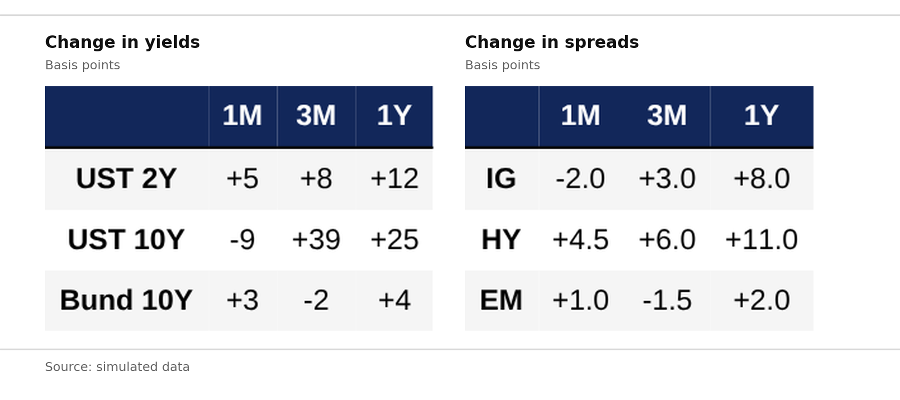
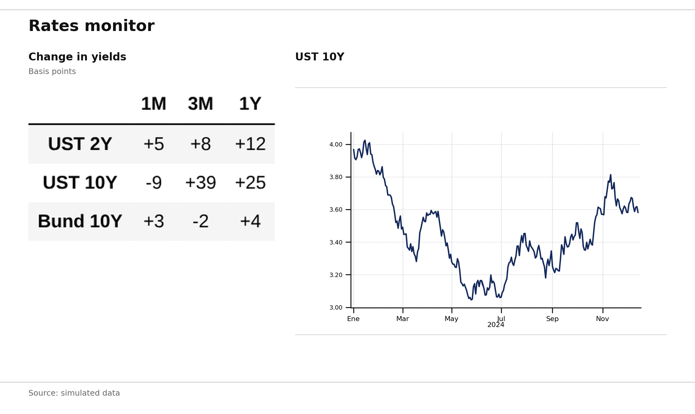
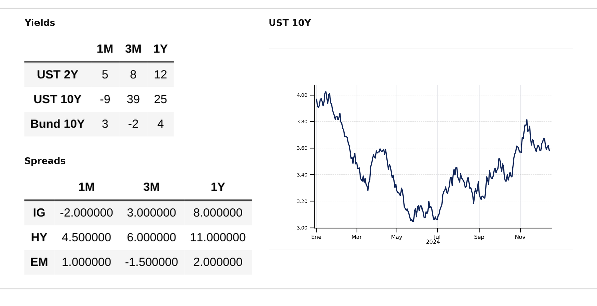

Panels, charts and layout¶
A TableSheet is a grid of panels. A panel is either a table (DataFrame / Styler) or an image (a GraphMtplt chart, a Matplotlib figure, a PIL image, a file...). This page explains how to create panels, give them names and titles, select which ones a styling call affects and arrange them on the grid.
import numpy as np
import pandas as pd
import helpers_ps as hp
TableSheet = hp.DfStyling.TableSheet
rng = np.random.default_rng(5)
df_yield = pd.DataFrame(
{"1M": [5, -9, 3], "3M": [8, 39, -2], "1Y": [12, 25, 4]},
index=["UST 2Y", "UST 10Y", "Bund 10Y"],
)
df_spreads = pd.DataFrame(
{"1M": [-2.0, 4.5, 1.0], "3M": [3.0, 6.0, -1.5], "1Y": [8.0, 11.0, 2.0]},
index=["IG", "HY", "EM"],
)
dates = pd.bdate_range("2024-01-02", periods=250)
curve_df = pd.DataFrame(
{"UST 10Y": 4 + rng.normal(0, 0.04, len(dates)).cumsum()},
index=dates,
)
Creating the sheet¶
TableSheet(dataframe=None, *, names=None, style=None, renderer=None, cache=None, nrows=None, ncols=None, width_ratios=None, **style_options)
dataframe can be:
| Input | Result |
|---|---|
A DataFrame, Styler or Series |
One table panel. |
| A list of tables | Several panels named panel_0, panel_1... (or names=[...]). |
A dictionary {name: table} |
Several panels with your names. |
None |
An empty sheet; add panels later with add_table / add_image. |
Any SheetStyle field (width_in=11, height_in=7.5, font_family=...) can be passed as keyword argument.
TableSheet(df_yield) # one table
TableSheet([df_yield, df_spreads], names=["yield", "spreads"])
TableSheet({"yield": df_yield, "spreads": df_spreads}, width_in=12)
Adding panels later¶
| Method | Description |
|---|---|
add_table(dataframe, name=None, *, activate=True) |
Adds a table panel. A Styler is copied, never modified. |
add_image(image, name=None, *, activate=True) |
Adds an image panel (see below). |
remove(*keys) |
Removes panels (by name or position) and their cells in an explicit layout; rows / columns left empty are dropped. |
panel_names (property) |
List of panel names in creation order. |
By default the new panel becomes the only active one, so the styling calls that follow apply to it. Use activate=False to keep the previous selection.
Selecting panels¶
on(*keys) chooses the panels that the next calls apply to. Keys are names or positions (negatives allowed); no arguments selects every panel.
sheet = (
TableSheet({"yield": df_yield, "spreads": df_spreads}, width_in=9)
.on().style_table(font_size=11, text_align="center",
header_styles={"color": "white", "background-color": "#12275A"},
corner_styles={"background-color": "#12275A"})
.on("yield").format("{:+.0f}").panel(title="Change in yields", subtitle="Basis points")
.on("spreads").format("{:+.1f}").panel(title="Change in spreads", subtitle="Basis points")
.layout(nrows=1) # side by side
.add_source("Source: simulated data")
)

Panel texts and geometry: panel¶
panel(*, title=None, subtitle=None, notes=None, align=None, valign=None, scale=None, title_size=None, title_color=None, title_weight=None)
None leaves a setting unchanged; use "" (or [] for notes) to clear it. It applies to the active panels.
| Argument | Description |
|---|---|
title, subtitle |
Text above the table (subtitle is smaller and gray). |
notes |
A string or list of strings below the panel. Replaces the previous ones. |
align |
"left" (default), "center", "right": horizontal position when the panel is narrower than its cell. |
valign |
"top", "center", "bottom": vertical position when the cell is taller than the panel (for example a panel that spans several rows). |
scale |
Overrides the sheet's scale for this panel. |
title_size, title_color, title_weight |
Style overrides of this panel's title. |
sheet.on("yield").panel(
title="Change in yields",
subtitle="Basis points",
notes=["MTD: month to date.", "Source: Bloomberg."],
)
Charts as panels: add_image¶
add_image(image, name=None, *, activate=True) accepts a GraphMtplt object directly, a Matplotlib Figure, a NumPy array, a PIL image, encoded bytes, or a file path. Figures (and objects with a _fig, such as GraphMtplt) are rasterized when the sheet is rendered with the sheet's dpi, so they always reflect their current state.
chart = (
hp.GraphMtplt(curve_df)
.graph_line(series=[{"ticker": "UST 10Y", "color": "#12275A"}],
x_axis={"bbg_format": True, "tick_step": 2})
.config_yaxis(fmt=".2f")
.horizontal_guides(mostrar_cero=False)
)
sheet = (
TableSheet(df_yield, names=["yield"], width_in=11)
.style_table(font_size=11, text_align="center")
.format("{:+.0f}")
.panel(title="Change in yields", subtitle="Basis points")
.add_image(chart, name="curve")
.panel(title="UST 10Y", scale="fit")
.layout([["yield", "curve"]], width_ratios=[2, 3])
.add_title("Rates monitor")
.add_source("Source: simulated data")
)

Chart size
Image panels treat scale="uniform" as "natural": a chart keeps its real size and is only shrunk if it does not fit. Use panel(scale="fit") to make it fill the width of its cell. Choose the chart's size when you create it with GraphMtplt.plot(figsize=(w, h)).
Arranging panels: layout¶
layout(rows=None, *, nrows=None, ncols=None, width_ratios=None)
| Form | Result |
|---|---|
layout() |
Stack the panels vertically (the default). |
layout(nrows=1) |
One row: panels side by side. |
layout(ncols=2) / layout(nrows=2) |
Fill a grid row by row in creation order. If only one is given, the other is the smallest that fits. |
layout([["a", "b"], ["c", "c"]]) |
Explicit grid, like matplotlib.pyplot.subplot_mosaic. Repeating a name makes the panel span several cells. Use None or "." for an empty cell. |
width_ratios=[1, 2] |
Relative width of each column (one value per column). |
Row heights follow the content of each row.
sheet = (
TableSheet({"yield": df_yield, "spreads": df_spreads}, width_in=11)
.on().style_table(font_size=11, text_align="center")
.on("yield").panel(title="Yields")
.on("spreads").panel(title="Spreads")
.add_image(chart, name="curve").panel(title="UST 10Y", scale="fit")
.layout([["yield", "curve"], ["spreads", "curve"]], width_ratios=[3, 4]) # the chart spans both rows
.on("curve").panel(valign="center")
)

Rectangles only
A repeated name must occupy a rectangular block of cells (otherwise ValueError). A row with fewer entries is stretched when its length divides the number of columns ([["a", "b"], ["c"]] makes c span both columns).
Spacing between panels¶
Grid spacing follows matplotlib.subplots_adjust semantics (see Sheet appearance and output):
sheet.subplots_adjust(wspace=0.15, hspace=0.25) # fractions of the average width / height
sheet.config_layout(col_gap_in=0.4, row_gap_in=0.3) # or fixed gaps in inches